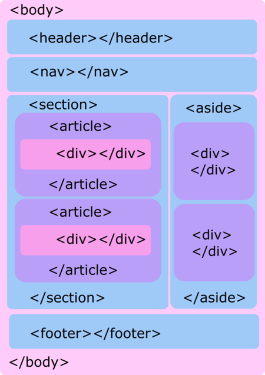

Estos elementos aunque claramente delimitan las principales secciones de una página Web, también pueden incluirse al interior de otros elementos para seccionarlos internamente. En un bloc de notas, los elementos anteriormente mencionados podrían verse de la siguiente manera de forma integrada en un ejemplo:

Estos elementos aunque claramente delimitan las principales secciones de una página Web, también pueden incluirse al interior de otros elementos para seccionarlos internamente.